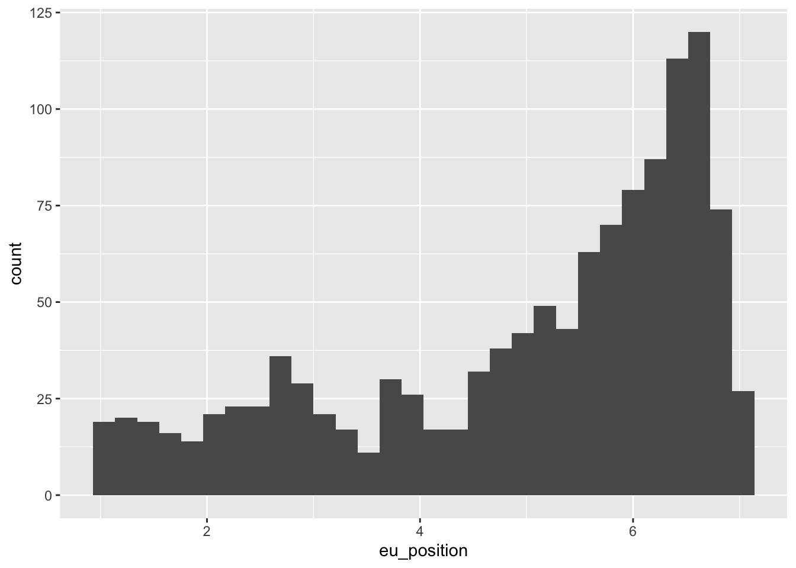
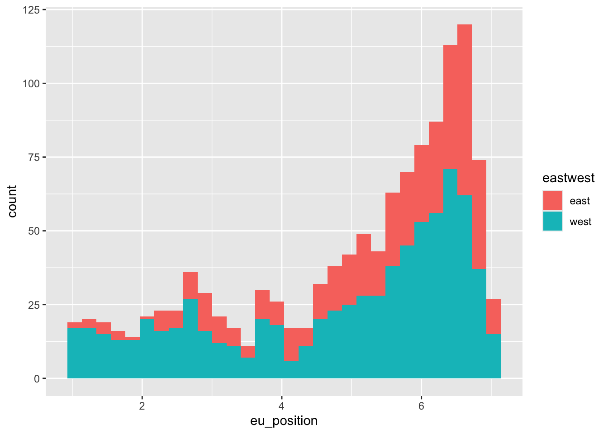
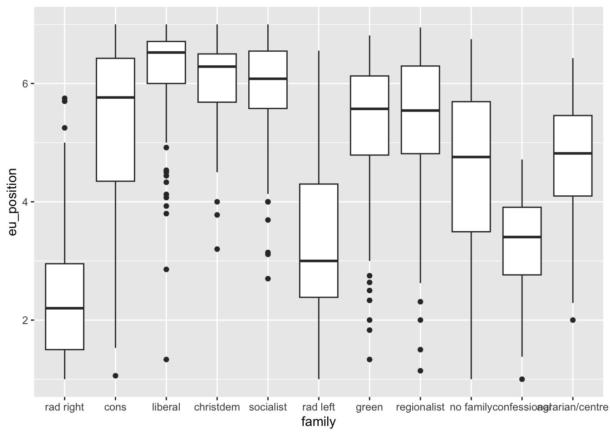
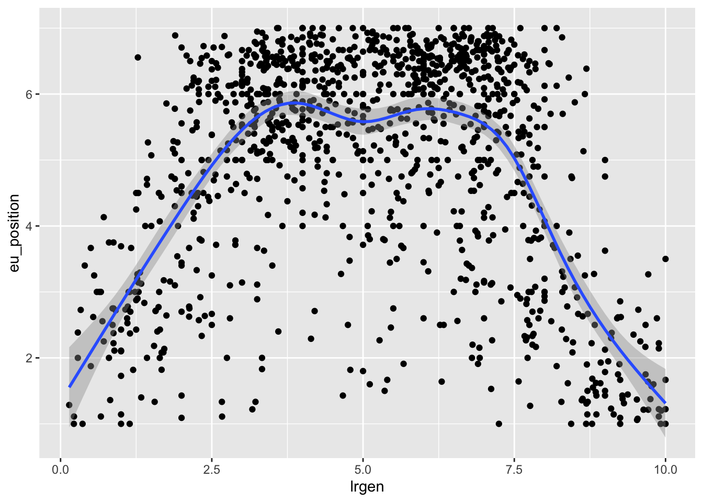
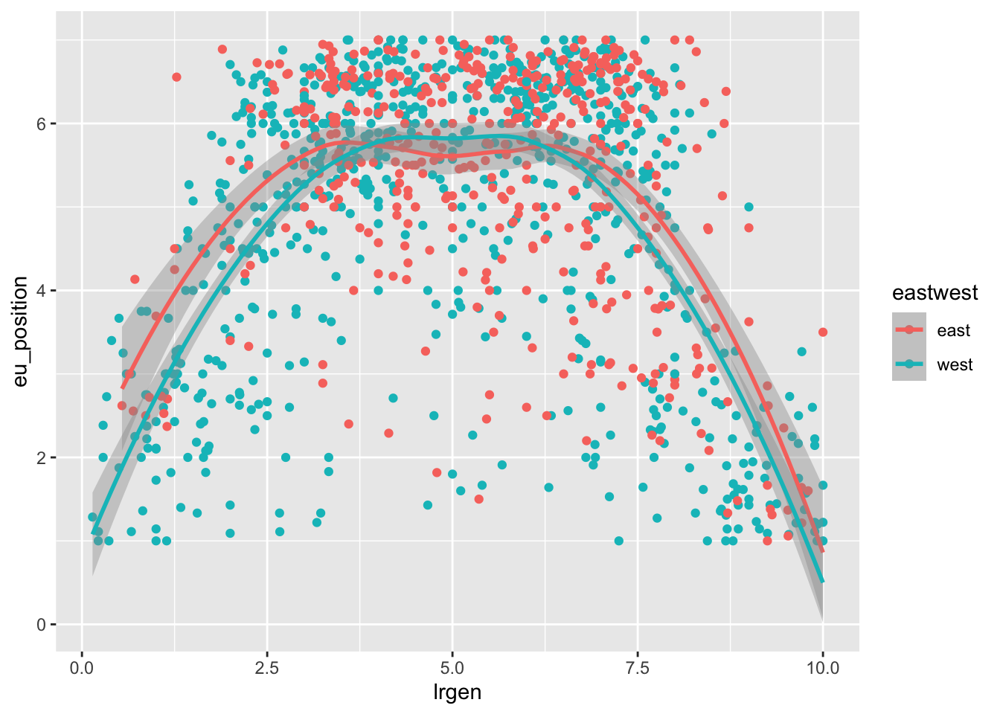
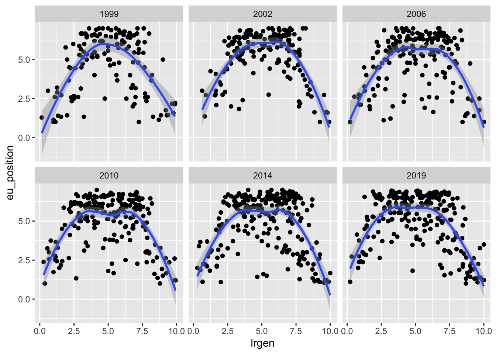
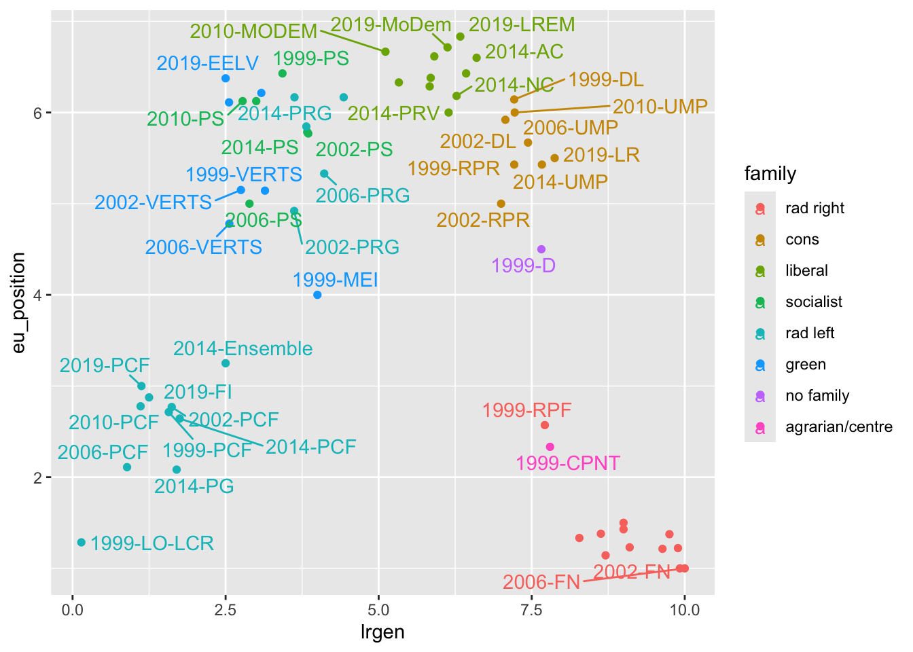
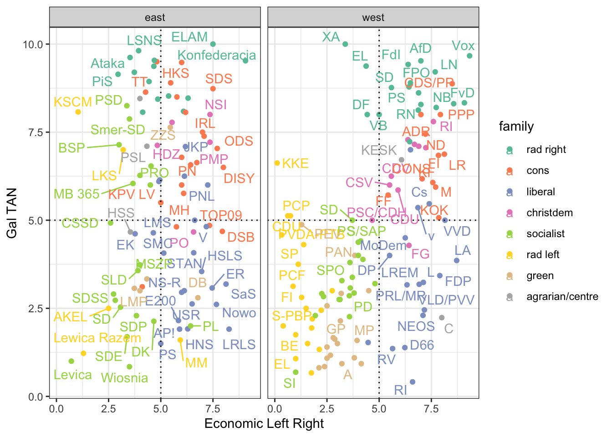
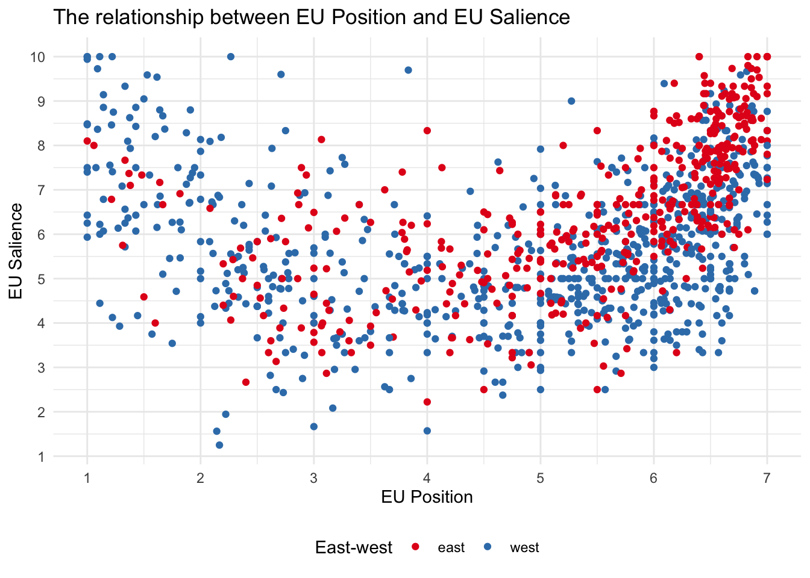
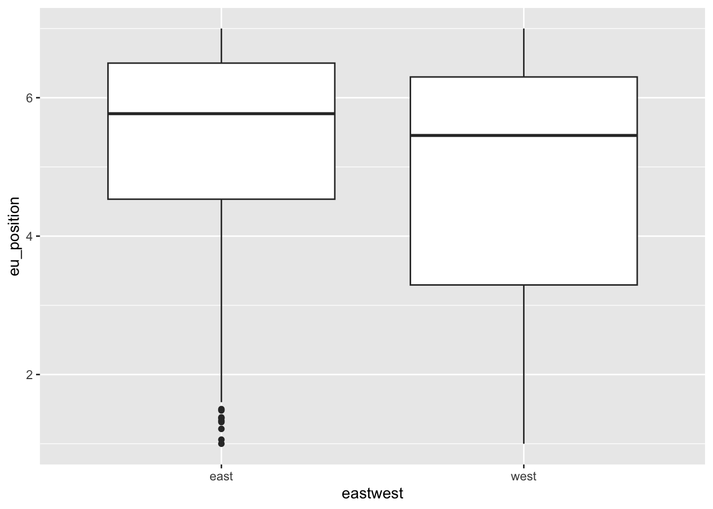

6 Data visualization
In this session, we will learn how to visualize data in R. Data visualization serves three primary purposes: data exploration, communication, and aesthetics.
First, when we have a new dataset and want to understand it, a few graphs can provide valuable insights into the distributions of variables (univariate plots) and their relationships with others (bivariate plots).
Second, once we have analyzed our data and want to convey our findings, graphs can be highly effective in illustrating our arguments. This idea is captured by the saying, “A picture is worth a thousand words.” This is particularly true in research, where good visualization is usually more effective than using hard-to-read tables. Moreover, information in public debates is increasingly being visualized. This is especially apparent in how graphs are more frequently used in the media to convey information. Think about the COVID-19 pandemic and all of the graphs that emerged to track the evolution of the pandemic, or the popularity of websites such as World in Data.
Furthermore, aesthetics play a significant role, and we tend to appreciate visually pleasing graphs. R is capable of producing exceptionally beautiful visualizations, and once you learn how to create them, you might develop a lasting preference for R over Excel for the rest of your life.
7 Bad visualizations
At the same time, there are many aspects we should pay attention to when creating graphs. Most of the data visualizations we see in the media or various reports are not great. So before showing you how to create graphs, here are a few recommendations on what you should avoid. According to Healy, graphs can be flawed for three main reasons: perceptual, substantive, and aesthetic.
7.1 Exploring party politics with graphs
To learn about how to make graphs, we will use the Chapell Hill Expert Survey. I you are interested in political parties, it is definitely a dataset you should know. Basically, every 4 years, hundreds of experts in different countries are asked to locate political parties on different scales (eg : locating a party on a left-right scale from 0 to 10). The goal is to have an valid overview of where do parties stand in different issues on different countries. To use the data, I read directly the link of the CHES trend stata file that is available on the CHES’s website.
To begin with, we load a set of packages that we will use in this session. We will use the haven package to read the data, the tidyverse package for data manipulation, and the labelled package to work with labelled data. You probably do not have the labelled package installed so you should install it before with install.packages("labelled").
# Install the package if needed
ches <- haven::read_dta("1999-2019_CHES_dataset_means(v3).dta")
ches# A tibble: 1,196 × 84
country eastwest eumember year expert party_id cmp_id party vote seat
<dbl+lbl> <dbl+lbl> <dbl+lbl> <dbl> <dbl> <dbl> <dbl> <chr> <dbl> <dbl>
1 1 [be] 1 [west] 1 [EU me… 1999 9 115 NA FN 1.5 0.700
2 1 [be] 1 [west] 1 [EU me… 1999 9 109 21521 CVP 14.1 14.7
3 1 [be] 1 [west] 1 [EU me… 1999 9 107 21421 PVV/… 14.3 15.3
4 1 [be] 1 [west] 1 [EU me… 1999 9 106 21422 PRL 7.7 9
5 1 [be] 1 [west] 1 [EU me… 1999 9 110 21913 VU 5.6 5.30
6 1 [be] 1 [west] 1 [EU me… 1999 9 111 21912 FDF 2.4 3
7 1 [be] 1 [west] 1 [EU me… 1999 9 103 21321 SP 9.6 9.30
8 1 [be] 1 [west] 1 [EU me… 1999 9 113 NA MCC NA NA
9 1 [be] 1 [west] 1 [EU me… 1999 9 114 NA ID21 NA NA
10 1 [be] 1 [west] 1 [EU me… 1999 9 108 21522 PSC 5.9 6.70
# ℹ 1,186 more rows
# ℹ 74 more variables: electionyear <dbl>, epvote <dbl>, family <dbl+lbl>,
# govt <dbl+lbl>, eu_position <dbl+lbl>, eu_salience <dbl>, eu_dissent <dbl>,
# eu_blur <dbl>, eu_benefit <dbl>, eu_ep <dbl+lbl>, eu_fiscal <dbl+lbl>,
# eu_intmark <dbl+lbl>, eu_employ <dbl+lbl>, eu_budgets <dbl>,
# eu_agri <dbl+lbl>, eu_cohesion <dbl+lbl>, eu_environ <dbl+lbl>,
# eu_asylum <dbl+lbl>, eu_foreign <dbl+lbl>, eu_turkey <dbl+lbl>, …ches |>
count(country, party)# A tibble: 509 × 3
country party n
<dbl+lbl> <chr> <int>
1 1 [be] AGALEV 3
2 1 [be] CD&V 4
3 1 [be] CDH 4
4 1 [be] CDV 1
5 1 [be] CVP 1
6 1 [be] ECOLO 6
7 1 [be] FDF 2
8 1 [be] FN 2
9 1 [be] Groen 3
10 1 [be] ID21 1
# ℹ 499 more rows# Convert all values to their labels
ches <- ches |>
mutate_all(unlabelled)
colnames(ches) [1] "country" "eastwest" "eumember"
[4] "year" "expert" "party_id"
[7] "cmp_id" "party" "vote"
[10] "seat" "electionyear" "epvote"
[13] "family" "govt" "eu_position"
[16] "eu_salience" "eu_dissent" "eu_blur"
[19] "eu_benefit" "eu_ep" "eu_fiscal"
[22] "eu_intmark" "eu_employ" "eu_budgets"
[25] "eu_agri" "eu_cohesion" "eu_environ"
[28] "eu_asylum" "eu_foreign" "eu_turkey"
[31] "lrgen" "lrecon" "lrecon_salience"
[34] "lrecon_dissent" "lrecon_blur" "galtan"
[37] "galtan_salience" "galtan_dissent" "galtan_blur"
[40] "spendvtax" "spendvtax_salience" "deregulation"
[43] "dereg_salience" "redistribution" "redist_salience"
[46] "econ_interven" "civlib_laworder" "civlib_salience"
[49] "sociallifestyle" "social_salience" "religious_principles"
[52] "relig_salience" "immigrate_policy" "immigrate_salience"
[55] "immigrate_dissent" "multiculturalism" "multicult_salience"
[58] "multicult_dissent" "urban_rural" "urban_salience"
[61] "environment" "enviro_salience" "cosmo"
[64] "cosmo_salience" "protectionism" "regions"
[67] "region_salience" "international_security" "international_salience"
[70] "us" "us_salience" "ethnic_minorities"
[73] "ethnic_salience" "nationalism" "russian_interference"
[76] "anti_islam_rhetoric" "people_vs_elite" "antielite_salience"
[79] "corrupt_salience" "members_vs_leadership" "mip_one"
[82] "mip_two" "mip_three" "chesversion" From the list of variables we can see that a few of them gives us variables on the year, the country, the party, its vote share and number of seats for a given wave and then a lot of variables on different issues.
7.2 Distributions
The first think we would like to know is how these variables are distributed. To do this we could first calculate some descriptive statistics.
summary(ches$eu_position) Min. 1st Qu. Median Mean 3rd Qu. Max.
1.000 3.831 5.570 5.003 6.388 7.000 But we would have a better understanding of how the values are distributed with a visualization ! For this I create an histogram with the package ggplot that we will use here to create all our graphs. There are alternatives to ggplot using base R or the package lattice but ggplot is the most popular and the most powerful. It is part of the tidyverse so you do not need to install it separately if you have the tidyverse package loaded.
The “gg” in ggplot represents the “grammar of graphics” (Wilkinson 2012). Graphs are constructed by adding various layers to a basic graph, allowing for progressively more complex modifications such as adjusting the title or adding annotations. To do a graph in ggplot, you need at least three things : data, aestethics and a geom.
Data : a dataframe
Aesthetics : what are the values that we want to map on the x and y axis, with wich color/shape/size
Geoms : the geometry allows you to specify how you want to represent your data :
geom_point(),geom_line().
It is not always easy to decide which graph is best at representing the information we want. You can have a look on the data to viz website or the R graph gallery which can help you doing this.
Other layers are also possible to add such as facets, statistics, coordinates and themes.
Graphs are built by adding these different layers with a + between each : it is additive syntax, here we do not use pipes.
The code belows shows how to create a histogram of the variable eu_position in the ches dataset. An histogram is a good way to see how values are distributed, which means how many values are in a given range. The geom_histogram() function creates the histogram. This is an univariate graph, meaning that we are looking at the distribution of only one variable.
# Data
ches |>
# Aesthetics : what are the values we want in the plot
ggplot(aes(x = eu_position)) +
# Geom : which kind of graphic do we want
geom_histogram()`stat_bin()` using `bins = 30`. Pick better value with `binwidth`.
Most of the time, we are interested to see how variables are distributed across groups. To do so with a histogram, we wan use the fill or color argument to have different colors for each group of a given variable.
ches |>
ggplot(aes(x = eu_position, fill = eastwest)) +
geom_histogram()`stat_bin()` using `bins = 30`. Pick better value with `binwidth`.
7.2.1 Your turn
Create an histogram with the immigrate_policy variable. How different is the distribution of immigration positions compared to positions towards european integration ?
7.3 Boxplots : relationships between 1 categorical and 1 continuous variable
To compare the distribution of a continuous variable across different groups of a categorical variable, we can use boxplots. Boxplots are a good way to see the median, the quartiles and the outliers of a variable.
ches |>
ggplot(aes(x = family, y = eu_position)) +
geom_boxplot()
7.4 Line plots : evolution of a variable over time
To plot the evolution of a variable over time, we can use a line plot. Here we will plot the evolution of the eu position of the main parties in the UK over time.
7.5 Scatter plots : relationships between two continuous variables
To see the relationship between two continuous variables, we can use a scatter plot. Here we will plot the relationship between the left-right position of a party and its position on the european integration issue.
# Are left right positions and eu positions related ?
ches |>
ggplot(aes(x = lrgen, y = eu_position)) +
geom_point() +
geom_smooth() `geom_smooth()` using method = 'gam' and formula = 'y ~ s(x, bs = "cs")'
We can also add a color to see if the relationship is different for different groups. Here we will use the eastwest variable to see if the relationship is different for parties in the east and the west of Europe.
ches |>
ggplot(aes(x = lrgen, y = eu_position, color = eastwest)) +
geom_point() +
geom_smooth() `geom_smooth()` using method = 'loess' and formula = 'y ~ x'
7.5.1 Your turn
Look at the relationship between the eastwest variable and the enviro_salience variable : how do you interpret it ?
7.6 Facets
To compare this relationship across many different categories, it is usually easier to use facetting with facet_wrap(). Facets are a way to split the data into different subplots and represent the same relationship for each category of a variable. Here we will plot the relationship between the left-right position of a party and its position on the european integration issue for each year.
ches |>
ggplot(aes(x = lrgen, y = eu_position)) +
geom_point() +
geom_smooth() +
facet_wrap(~year)`geom_smooth()` using method = 'loess' and formula = 'y ~ x'
7.7 Adding annotations with ggrepel()
To add annotations to a graph, we can use the geom_text() function from the ggrepel package. This function allows you to add text to a graph. Here we will add the name of the party to the previous graph. You need to specify the label argument in the aes() function to tell ggplot which text to add.
ches |>
# Keep only french observations
filter(country == "fr") |>
# Create a party-year variable by combining the text of both
mutate(party_year = str_c(year, "-", party)) |>
ggplot(aes(x = lrgen, y = eu_position, color = family, label = party_year)) +
geom_point() +
geom_text_repel()Warning: ggrepel: 19 unlabeled data points (too many overlaps). Consider
increasing max.overlaps
7.8 Complex graphs : annotations + colors + facets
Graphs can be more and more complex when we add more layers. Here we will plot the relationship between the left-right economic position of a party and its position on the left-right cultural dimensions for each year, with different colors for each family and the name of the party as an annotation.
ches |>
filter(year == 2019, !family %in% c("no family", "confessional", "regionalist")) |>
ggplot(aes(lrecon, galtan, color = family, label = party)) + # Aesthtetics
geom_point() +
geom_hline(yintercept = 5, linetype = "dotted") +
geom_vline(xintercept = 5, linetype = "dotted") +
geom_text_repel() +
facet_wrap(~ eastwest) +
theme_bw() +
scale_x_continuous("Economic Left Right") +
scale_y_continuous("Gal TAN") +
scale_color_brewer(palette = "Set2")
7.9 Customize your graphs
You can customize your graphs by adding different layers. Here we will change the x and y axis, the title, the theme, the color and the legend of the previous graph.
ches |>
ggplot(aes(eu_position, eu_salience, color = eastwest)) +
geom_point() +
# Change the x axis
scale_x_continuous("EU Position", breaks = seq(1, 10, 1)) +
# Change the y axis
scale_y_continuous("EU Salience", breaks = seq(1, 10, 1)) +
# Change the title
ggtitle("The relationship between EU Position and EU Salience") +
# Change the theme
theme_minimal() +
# Change the color
scale_color_brewer("East-west", palette = "Set1") +
# Change the legend
theme(legend.position = "bottom")Warning: Removed 4 rows containing missing values or values outside the scale range
(`geom_point()`).
7.10 Save and export graphs
You can save your graphs as a png file using the ggsave() function. Here we will save the boxplot of the eu position of parties in the east and the west of Europe.
ches |>
ggplot(aes(eastwest, eu_position)) +
geom_boxplot()
# ggsave(filename = "eu_position_boxplot.png")7.11 To go further
There are many resources to learn more about data visualization in R. Here are a few:
Kieran Healy’s has written a whole book on dataviz. See also his paper on ARS : Data viz and sociology
Other book by Claus O Wilke on dataviz
Chapter on dataviz in the R for Data science book
Chapter by Irizarry in his book
A paper by Hadley Wickham explaining the idea of “grammar of graphics”
If you would also like to learn how to animate your graphs, you can consult the
gganimatepackage.Tutfte : The visual display of quantitative information
A video by Chris Bail introducing dataviz
Other ressources pointed out by François Briatte on github
GGplot extensions : https://exts.ggplot2.tidyverse.org/gallery/
https://stackoverflow.com/questions/tagged/ggplot2
http://albertocairo.com/
https://visionscarto.net/hieroglyphes-isotype
https://visionscarto.net/la-semiologie-graphique-a-50-ans